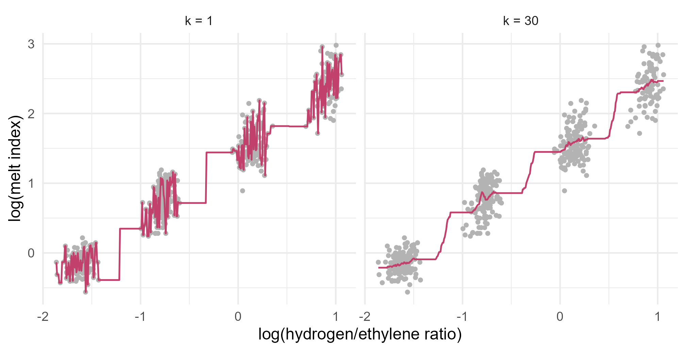

Module 7 · Lesson 3 of 14 Week 106 of 160 About 5–7 hours
k-nearest neighbors
Predict from the most similar past cases
The simplest flexible method there is: to predict a new case, find the k most similar past cases and average them. Use it to predict the melt index from one tag, then four, then twenty, and choose k by cross-validation. See why the units of the predictors suddenly matter, how irrelevant tags ruin the neighbors, and why distances stop meaning much in many dimensions. Then use it to diagnose reactor alarms.
An experienced operator, asked what the melt index is doing right now, might say: “The last time we ran at this hydrogen ratio, it was about 0.9.” That’s a prediction method, and a good one. It assumes nothing about the shape of f. It just finds the most similar past cases and reports what happened then.
k-nearest neighbors (kNN) is that method, made precise. To predict at a new input x_0, find the k training points closest to x_0, the set \mathcal{N}_0, and average their responses:
\hat f(x_0) = \frac{1}{k} \sum_{i \in \mathcal{N}_0} y_i .
For classification, take a vote instead: predict the most common class among the k neighbors. kNN is the purest non-parametric method, and it’s a useful yardstick: if a fancy model can’t beat kNN, something is wrong with it. It also shows, very clearly, a problem that every flexible method has to face.
kNN is learning by analogy: “what happened last time things looked like this?” It’s simple enough to code in three lines, and it still teaches us something deep about high dimensions.
In this lesson you’ll:
- predict with kNN by hand, then with
FNN::knn.reg() - choose k by cross-validation, and see the bias-variance trade-off in k
- see why kNN depends on the units of the predictors, and what standardizing does
- watch irrelevant predictors ruin the neighbors: the curse of dimensionality
- classify reactor alarms with
class::knn()
Neighbors by hand
The setup code reads the soft-sensor data from Lesson 2, with the logs, and lists the four chemistry tags in chem and all 20 tags in tags. It makes the same 10 folds as Lesson 2, so that the CV errors here can be compared with that lesson’s. It also reads the alarm data, for the end of the lesson.
Your turn. The operators are about to run at a hydrogen ratio of 0.25. Find the 5 past samples whose \log(\text{H}_2) is closest to \log(0.25), and predict the MI as the geometric mean of their MIs (the mean on the log scale, transformed back).
order(dist0) lists the samples from nearest to farthest. Take the first 5.
dist0 <- abs(mi$log_h2 - log(0.25))
nearest <- order(dist0)[1:5]
mi[nearest, c("sample", "h2_ratio", "melt_index")]
exp(mean(mi$log_mi[nearest]))The five neighbors ran at hydrogen ratios of 0.228 to 0.239, all a little below 0.25, and their MIs range from 0.68 to 1.16. The prediction is 0.88. Notice that there’s no sample above 0.25 among them: the nearest neighbors can all lie on one side of x_0, which biases the prediction toward their side. Here, that probably makes 0.88 a little low.
FNN::knn.reg(train, test, y, k) does the same, for many test points at once. Its first two arguments are matrices of predictors.
Your turn. Write a function that computes the 10-fold CV RMSE of kNN regression on log(MI), for a given set of predictor columns and a given k. Use it with log_h2 alone and k = 5.
Pass the function’s argument: k = k.
cv_knn <- function(cols, k) {
X <- as.matrix(mi[cols])
err <- numeric(nrow(mi))
for (j in 1:10) {
tr <- fold != j
pred <- FNN::knn.reg(X[tr, , drop = FALSE], X[!tr, , drop = FALSE], mi$log_mi[tr], k = k)$pred
err[!tr] <- mi$log_mi[!tr] - pred
}
sqrt(mean(err^2))
}
cv_knn("log_h2", 5)0.230. Lesson 2’s straight line in log_h2 had a CV RMSE of 0.217 on the same folds, so kNN with k = 5 is a little worse. drop = FALSE keeps a one-column matrix a matrix, instead of letting R turn it into a vector.
Choosing k
k is kNN’s flexibility dial, turned the opposite way from a polynomial’s degree. With k = 1, each prediction copies a single past sample, noise and all: low bias, high variance. With large k, each prediction averages many samples, some of them far from x_0: low variance, but biased, because far-away samples have a different f. At the extreme, k = n predicts the overall mean everywhere.
g <- seq(min(mi$log_h2), max(mi$log_h2), length.out = 400)
fits <- rbind(data.frame(x = g, y = FNN::knn.reg(as.matrix(mi$log_h2), as.matrix(g), mi$log_mi, k = 1)$pred, k = "k = 1"),
data.frame(x = g, y = FNN::knn.reg(as.matrix(mi$log_h2), as.matrix(g), mi$log_mi, k = 30)$pred, k = "k = 30"))
ggplot(mi, aes(log_h2, log_mi)) +
geom_point(color = "grey70", size = 1) +
geom_line(data = fits, aes(x, y), color = "#C2416C", linewidth = 0.6) +
facet_wrap(~k) +
labs(x = "log(hydrogen/ethylene ratio)", y = "log(melt index)") +
theme_minimal(base_size = 12)
Your turn. Find the CV RMSE with log_h2 alone for k = 1, 2, 3, 5, 8, 10, 15, 20, 30 and 50, and the best k.
Each call uses that iteration’s k.
cv_knn <- function(cols, k) {
X <- as.matrix(mi[cols])
err <- numeric(nrow(mi))
for (j in 1:10) {
tr <- fold != j
pred <- FNN::knn.reg(X[tr, , drop = FALSE], X[!tr, , drop = FALSE], mi$log_mi[tr], k = k)$pred
err[!tr] <- mi$log_mi[!tr] - pred
}
sqrt(mean(err^2))
}
ks <- c(1, 2, 3, 5, 8, 10, 15, 20, 30, 50)
cv <- sapply(ks, function(k) cv_knn("log_h2", k))
round(cv, 4)
ks[which.min(cv)]The CV RMSE falls from 0.297 at k = 1 to 0.2145 at k = 30, and rises again to 0.217 at k = 50. With one predictor and 450 training samples, k can be large, because 30 neighbors still lie close together. The best kNN is now slightly better than the straight line (0.217), which tells you the relationship is very nearly a straight line: kNN has to work hard to match a model that assumed the right shape.
Units matter
With more than one predictor, “nearest” means smallest Euclidean distance, \sqrt{\sum_j (x_{0j} - x_{ij})^2}, and that adds up differences in whatever units the predictors happen to be in. A difference of 1 °C counts the same as a difference of 1 in the comonomer ratio, which is 25 times the ratio’s whole range.
Your turn. Cross-validate kNN with k = 8 on the four chemistry tags, as they are. Then express the comonomer ratio in mol% (multiply by 100), and do it again.
A ratio of 0.05 is 5 mol%: multiply by 100.
cv_knn_data <- function(data, cols, k) {
X <- as.matrix(data[cols])
err <- numeric(nrow(data))
for (j in 1:10) {
tr <- fold != j
pred <- FNN::knn.reg(X[tr, , drop = FALSE], X[!tr, , drop = FALSE], data$log_mi[tr], k = k)$pred
err[!tr] <- data$log_mi[!tr] - pred
}
sqrt(mean(err^2))
}
mi_pct <- mi
mi_pct$comonomer_ratio <- mi$comonomer_ratio * 100
c(ratio = cv_knn_data(mi, chem, 8), mol_pct = cv_knn_data(mi_pct, chem, 8))0.192 with the ratio, and 0.211 with mol%: the same data and the same method give a different model, only because of the units. With the ratio, whose SD is 0.009, differences in comonomer are tiny next to differences in temperature (SD 1.1 °C), so kNN effectively ignores the comonomer. In mol%, its SD is 0.9, and it counts as much as temperature. Ignoring it happens to work better here, but by luck, not by design.
The usual fix is to standardize every predictor: subtract its mean and divide by its SD, so that each one is measured in SDs. Then the units no longer matter. But it’s a choice too: it makes every predictor equally important in the distance. To avoid the leakage of Lesson 2, the means and SDs should come from each fold’s training rows only.
Your turn. Add standardization to the CV function, using the training rows’ means and SDs, and cross-validate the four chemistry tags with k = 8, in both units.
Scale the test rows with the training rows’ SDs, s.
cv_knn_std <- function(data, cols, k) {
X <- as.matrix(data[cols])
err <- numeric(nrow(data))
for (j in 1:10) {
tr <- fold != j
mu <- colMeans(X[tr, , drop = FALSE])
s <- apply(X[tr, , drop = FALSE], 2, sd)
Xtr <- scale(X[tr, , drop = FALSE], center = mu, scale = s)
Xte <- scale(X[!tr, , drop = FALSE], center = mu, scale = s)
err[!tr] <- data$log_mi[!tr] - FNN::knn.reg(Xtr, Xte, data$log_mi[tr], k = k)$pred
}
sqrt(mean(err^2))
}
mi_pct <- mi
mi_pct$comonomer_ratio <- mi$comonomer_ratio * 100
c(ratio = cv_knn_std(mi, chem, 8), mol_pct = cv_knn_std(mi_pct, chem, 8))0.227 both ways: once each predictor is measured in its own SDs, the units no longer matter. But it’s worse than either unscaled version, because standardizing gives the comonomer ratio a full say, and the comonomer matters much less than hydrogen. kNN has no way to learn that some predictors matter more than others. Every predictor you give it counts fully, so choosing the predictors is up to you.
The curse of dimensionality
Standardizing gave the comonomer ratio an equal say, and it hurt, because the comonomer matters much less than hydrogen. Now imagine giving an equal say to 16 tags that don’t matter at all.
Your turn. Compare standardized kNN with k = 10 on the four chemistry tags and on all 20 tags.
All 20 tags are in tags.
cv_knn_std <- function(data, cols, k) {
X <- as.matrix(data[cols])
err <- numeric(nrow(data))
for (j in 1:10) {
tr <- fold != j
mu <- colMeans(X[tr, , drop = FALSE])
s <- apply(X[tr, , drop = FALSE], 2, sd)
Xtr <- scale(X[tr, , drop = FALSE], center = mu, scale = s)
Xte <- scale(X[!tr, , drop = FALSE], center = mu, scale = s)
err[!tr] <- data$log_mi[!tr] - FNN::knn.reg(Xtr, Xte, data$log_mi[tr], k = k)$pred
}
sqrt(mean(err^2))
}
c(chemistry = cv_knn_std(mi, chem, 10), all_tags = cv_knn_std(mi, tags, 10))0.229 with the four chemistry tags, and 0.509 with all 20: more than twice the error, and much worse than hydrogen alone (0.2145). The best k with 20 tags, 5 to 10, doesn’t help: it’s still above 0.5. Compare Lesson 2, where adding the same 16 tags to a linear model cost almost nothing (0.170 to 0.174): least squares can give an irrelevant tag a coefficient near zero, but kNN can’t ignore anything. Every tag counts fully in every distance, so with 20 tags, the “nearest” samples are mostly the ones that happen to match on 16 irrelevant numbers.
There’s a deeper problem, even when every predictor matters. In many dimensions, everything is far from everything. To capture 10% of uniformly spread data in a neighborhood, you need 10% of the range of one predictor, but 0.1^{1/10} = 79\% of the range of each of ten predictors. “Local” stops being local. This is the curse of dimensionality, and it hits every method that relies on nearness.
Your turn. Simulate 500 points spread uniformly in p dimensions, and find the ratio of the nearest to the farthest distance from the first point to the others, for p = 2 and p = 100.
Divide the nearest distance by the farthest: max(d).
set.seed(7033)
ratio <- sapply(c(2, 100), function(p) {
X <- matrix(runif(500 * p), nrow = 500)
d <- sqrt(colSums((t(X[-1, ]) - X[1, ])^2))
min(d) / max(d)
})
ratio0.012 in 2 dimensions: the nearest point is 90 times closer than the farthest. In 100 dimensions, 0.70: the nearest of 499 random points is 70% as far away as the farthest. When all the distances are about the same, “nearest” means very little.
NoteGo deeper: why distances concentrate
For two independent points uniform on [0, 1]^p, the squared distance is a sum of p independent terms (u_j - v_j)^2, each with mean 1/6 and variance 7/180. So E\|u - v\|^2 = p/6, and its standard deviation is \sqrt{7p/180}. The relative spread of the squared distance, \sqrt{7p/180}\,/\,(p/6) \approx 1.18/\sqrt{p}, shrinks like 1/\sqrt p: with p = 100, almost every squared distance is within about 12% of p/6. Beyer and colleagues (“When Is ‘Nearest Neighbor’ Meaningful?”, 1999) showed that this happens for a broad class of distributions, not only uniform ones. Real data escape the worst of it when their predictors are correlated, so that the data live near a low-dimensional surface. That’s what Lesson 12’s principal components exploit.
kNN for classification
For a categorical response, kNN takes a vote among the k neighbors, and the share of the votes for each class is an estimate of P(Y = \text{class} \mid x_0). class::knn(train, test, cl, k) returns the winning class for each test row.
The alarm data hold 800 high-temperature alarms on a reactor, each summarized by six measurements over the following 10 minutes, and labeled with the cause the engineers found afterwards: normal (a false alarm from a load change), loss of cooling, a feed upset, or a sticking control valve. Lessons 4 and 5 model them properly. Here, they test kNN.
Your turn. Cross-validate kNN with k = 9 on the six standardized measurements, and find the error rate.
Use 9 neighbors. The second set.seed() is there because knn() breaks ties at random.
vars <- c("temp_dev_C", "pressure_dev_bar", "coolant_dt_C", "feed_dev_pct", "valve_pos_pct", "valve_sd_pct")
X <- as.matrix(faults[vars])
set.seed(7034)
ffold <- sample(rep(1:10, length.out = nrow(faults)))
pred <- factor(rep(NA, nrow(faults)), levels = levels(faults$cause))
set.seed(7035)
for (j in 1:10) {
tr <- ffold != j
mu <- colMeans(X[tr, ])
s <- apply(X[tr, ], 2, sd)
pred[!tr] <- class::knn(scale(X[tr, ], mu, s), scale(X[!tr, ], mu, s), faults$cause[tr], k = 9)
}
mean(pred != faults$cause)20.1% of the alarms are misdiagnosed. The CV error is between 19% and 21% for any k from 5 to 15, and it rises on both sides: 26% at k = 1, and 24% at k = 60. Half the alarms are normal, so always guessing “normal” would be wrong 50% of the time: kNN has learned a lot. Lessons 4 and 5 will beat it, with models that use the shape of each class.
Here’s what kNN’s decision regions look like, with just two of the measurements, the temperature deviation and the valve’s variability:
z <- scale(faults[c("temp_dev_C", "valve_sd_pct")])
grid2 <- expand.grid(temp_dev_C = seq(-2.5, 4.5, length.out = 150), valve_sd_pct = seq(0, 8, length.out = 150))
zg <- scale(grid2, attr(z, "scaled:center"), attr(z, "scaled:scale"))
regions <- rbind(cbind(grid2, cause = class::knn(z, zg, faults$cause, k = 1), k = "k = 1"),
cbind(grid2, cause = class::knn(z, zg, faults$cause, k = 25), k = "k = 25"))
cols <- c(normal = "grey55", cooling_loss = "#2a78d6", feed_upset = "#1baf7a", sticking_valve = "#C2416C")
ggplot(regions, aes(temp_dev_C, valve_sd_pct)) +
geom_raster(aes(fill = cause), alpha = 0.35) +
geom_point(data = faults, aes(color = cause), size = 0.6) +
scale_fill_manual(values = cols, name = "Cause") + scale_color_manual(values = cols, guide = "none") +
facet_wrap(~k) + coord_cartesian(xlim = c(-2.5, 4.5), ylim = c(0, 8), expand = FALSE) +
labs(x = "Temperature deviation (°C)", y = "Valve position SD (%)") +
theme_minimal(base_size = 11) + theme(legend.position = "top")![Two panels showing kNN decision regions for the alarm causes, using temperature deviation on the horizontal axis and the valve's standard deviation on the vertical axis. With k equals 1, on the left, the regions are a patchwork of small islands, with many specks of one class inside another. With k equals 25, on the right, the regions are smooth: sticking valve at the top, where the valve's standard deviation is above about 2.5 to 3, normal at the bottom left, and loss of cooling at the bottom right, with only slivers of feed upset between them.](03-knn_files/figure-html/unnamed-chunk-22-1.png)
With k = 1, every alarm gets its own little island: the boundary is overfitted to the training data. With k = 25, the regions are smooth and sensible. With only these two measurements, the CV error is much higher, about 33% at its best (k = 25): loss of cooling and feed upsets overlap on these two axes, and only the other measurements tell them apart.
Challenge round
Challenge 1 · No extrapolation. The highest hydrogen ratio in the data is 2.89. Predict log(MI) at a ratio of 4 with kNN (k = 30, on log_h2 alone) and with the straight line lm(log_mi ~ log_h2), both fitted to all the data. Transform both back to the MI scale.
Predict the line at x_new.
x_new <- log(4)
knn_pred <- FNN::knn.reg(as.matrix(mi$log_h2), as.matrix(x_new), mi$log_mi, k = 30)$pred
lm_pred <- predict(lm(log_mi ~ log_h2, data = mi), data.frame(log_h2 = x_new))
exp(c(knn = knn_pred, line = unname(lm_pred)))kNN predicts an MI of 11.8, and the line 17.3. The 30 nearest neighbors of a ratio of 4 are the 30 samples with the highest ratios, all below 2.9, so kNN predicts about what they had. The line carries the trend on. If the chemistry holds, the line is right and kNN is badly low; if something new happens at a ratio of 4, neither knows. kNN’s predictions are always averages of responses it has seen, so they can never leave the range of the data. That’s a safety feature and a limitation: a soft sensor built on kNN can’t warn you about a grade you’ve never made.
Challenge 2 · The votes. With prob = TRUE, class::knn() also returns the share of votes for the winning class. Fit kNN with k = 9 to all the alarms but the first, on the six standardized measurements, and classify the first. What’s its predicted cause, and what share of the 9 neighbors voted for it?
Ask for the vote shares with prob = TRUE.
vars <- c("temp_dev_C", "pressure_dev_bar", "coolant_dt_C", "feed_dev_pct", "valve_pos_pct", "valve_sd_pct")
Z <- scale(as.matrix(faults[vars]))
set.seed(7036)
p1 <- class::knn(Z[-1, ], Z[1, , drop = FALSE], faults$cause[-1], k = 9, prob = TRUE)
c(as.character(p1), round(attr(p1, "prob"), 3), as.character(faults$cause[1]))kNN says “normal”, with 6 of the 9 votes (0.667), but the engineers found that alarm A001 was a loss of cooling. Its measurements are borderline: a temperature 1.2 °C high, a coolant temperature rise of 7.5 °C (normal runs about 8, and a cooling loss about 6) and the valve 63% open. The vote share is a rough probability: 0.667 says that this diagnosis is far from sure, and an alarm like this one deserves a second look. Lessons 4 to 6 build classifiers whose probabilities are better calibrated.
Quick quiz
1. What does kNN regression predict at a new point?
With k = 1, it’s the nearest point’s response. With larger k, an average.
2. How does increasing k change the bias and variance?
Larger k averages more points, some farther away. k = 1 is the most flexible.
3. Why standardize the predictors before kNN?
Standardizing makes each predictor count equally, which is itself a choice.
4. Adding 16 irrelevant tags hardly hurt the linear model but doubled kNN’s error. Why?
That’s one face of the curse of dimensionality.
5. What happens to distances between random points as the number of dimensions grows?
In 100 dimensions, the ratio of nearest to farthest distance was about 0.7.
6. What does kNN predict far outside the range of the training data?
Its predictions are always averages of observed responses, so it can’t go beyond them.
Wrap-up
You’ve met the simplest flexible method, and the problem that haunts all of them. Here’s what you’ve learned:
- kNN predicts the average of the k nearest training responses, or their majority class.
- k is the flexibility dial: small k overfits, large k oversmooths. Cross-validation chose k = 30 for the melt index on hydrogen alone, with a CV RMSE of 0.2145.
- Units matter: distances add up the predictors’ units. Standardizing (inside each fold) removes that, but it gives every predictor an equal say.
- The curse of dimensionality: 16 irrelevant tags doubled kNN’s error, to 0.509, and in 100 dimensions, the nearest point is almost as far as the farthest.
- kNN classification misdiagnosed 20.1% of the reactor alarms, with k = 9. Its vote shares estimate the class probabilities.
- kNN can’t extrapolate. Its predictions are always averages of observed values.
TipPractice in RStudio (optional, about an hour)
Download soft_sensor.csv and process_faults.csv into your project’s data-raw/ folder, and install FNN.
- Weighting by importance. Standardize the four chemistry tags, then multiply each one by the size of its effect in Lesson 2’s chemistry model (its coefficient times its SD). Does kNN do better with these weighted distances?
- Adding noise tags one at a time. Add the 16 irrelevant tags to the chemistry tags one by one, and plot kNN’s CV RMSE against the number of tags.
- Plot the curse. Repeat the distance simulation for p = 1, 2, 5, 10, 20, 50, 100 and 500, and plot the nearest-to-farthest ratio against p.
- The confusion matrix. Make
table(pred, faults$cause)for the cross-validated kNN predictions. Which causes does kNN confuse most?
NoteKey words from this lesson
- k-nearest neighbors (kNN)
- A method that predicts from the k training points closest to the new point: their average response, or their majority class.
- Euclidean distance
- The straight-line distance between two points, \sqrt{\sum_j (x_j - z_j)^2}.
- Standardizing
- Subtracting a variable’s mean and dividing by its standard deviation, so that it’s measured in standard deviations.
- Curse of dimensionality
- The ways that data become sparse, and distances less informative, as the number of dimensions grows.
- Decision boundary
- The boundary between the regions of input space that a classifier assigns to different classes.
- Extrapolation
- Predicting outside the range of the training data.
NoteWant to read more?
- James, Witten, Hastie and Tibshirani, An Introduction to Statistical Learning (2nd edition), section 2.2.3 (kNN classification) and section 3.5 (kNN regression against linear regression, with the curse of dimensionality).
- Hastie, Tibshirani and Friedman, The Elements of Statistical Learning, sections 2.3 and 2.5, “Local Methods in High Dimensions”.
- Kevin Beyer, Jonathan Goldstein, Raghu Ramakrishnan and Uri Shaft, “When Is ‘Nearest Neighbor’ Meaningful?”, International Conference on Database Theory, 1999, doi:10.1007/3-540-49257-7_15.